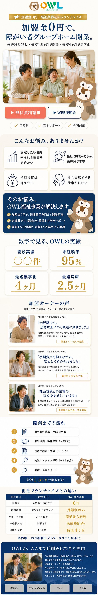
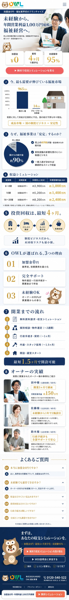

現状LPの課題を踏まえ、3案をご用意しました。A・Bはフル作り替え、Cは現LPを活かす改修案です。打ち合わせでご判断ください。
お悩み共感 → 解決 → お客様の声で信頼を積み上げる、感情に寄り添う構成

市場機会 → 安定性の根拠 → 収益シミュレーションで「儲かるか」を数字で示す構成

| このLPのセクション | 訴求の型 | 数字の根拠 |
|---|---|---|
| ② 市場機会 | 需給ギャップを見せる | 障がい者 約965万人／GH利用者 約14万人（厚労省系データ・各社FC資料で共通引用） |
| ③ なぜ安定？ | 制度ビジネスの安定性 | 売上の約9割が国・自治体の給付金（障害者総合支援法に基づく事業） |
| ④ 収益シミュレーション | 居室数別に年間収益試算 | 8-10居室 約700万円／12-14居室 約1,200万円／16-20居室 約1,800万円（OWL実績ベース／河合さん2026-06-05指示） |
| ⑤ 月次黒字化 | 黒字化までの期間 | 月次黒字化 最短4ヶ月（「投資回収」表現は削除） |
| ⑧ オーナー実績 | 本番口コミ5件で実績紹介 | 大阪70居室+／三重2棟／福島4棟／千葉3棟／愛知2棟（実加盟者・撮影可能） |
※ 数字はOWL実績ベースに差し替え済（河合さん2026-06-05指示）。同業比較：tocotoco（旧わおん）は2025年商号変更でGoogle P-MAX運用中・登録99人YouTube展開（競合調査）。
今のLPの良い部分は残し、足りない要素（お客様の声など）だけを追加する、低リスク・低コストの案
| 現LPの要素 | 判断 | 理由 |
|---|---|---|
| 選ばれる理由3つ（加盟金0円/黒字化/未経験OK） | ✅ 残す | 内容は良い |
| OWLとは／GHとは の説明 | ✅ 残す | 理解促進に有用 |
| マスコット・FV | 🔄 差し替え | ★アウくんキャラ→本番口コミ5件（撮影可・河合さん2026-06-05指示） |
| 他社比較（画像） | 🔧 直す | 画像→HTMLテーブル化（AI/SEO到達） |
| h1なし | 🔧 直す | h1タグ追加 |
| お客様の声 | ➕ 足す | 本番5件フルテキスト確定済（こちら） |
| 開業までの流れ（5ステップ） | ➕ 足す | 「最短3ヶ月」の根拠（旧1.5ヶ月から修正） |
| 収益シミュレーション表 | ➕ 足す | 8-10/12-14/16-20居室別 年間収益（OWL実数字） |
| FAQ | ➕ 足す | 残った疑問の解消 |
| 観点 | A：共感型 | B：収益型 | C：ハイブリッド改修 |
|---|---|---|---|
| やること | フル作り替え | フル作り替え | 現LP活用＋追加 |
| 参照元 | ミチルシリカ | 同業大手FC | 現LP＋A/Bの良い要素 |
| 刺さる層 | 社会貢献したい層 | 儲かるか見極めたい層 | 現状維持＋底上げ |
| コスト/リスク | 高 | 高 | 低（推奨） |
| スピード | 遅 | 遅 | 速い |